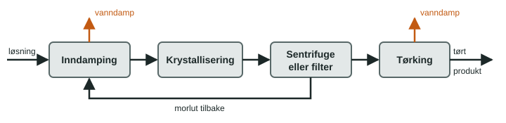

Tørking og krystallisering
Mange produkter selges som fast stoff: salt, sukker, gjødsel, pulverkaffe og mineraler. Ofte starter de som en løsning eller et vått slam. Ved krystallisering får vi stoffet ut av løsningen som faste krystaller. Ved tørking fjerner vi den siste væsken.
Fra løsning til tørt produkt
Krystallisering og tørking kommer sjelden alene. Ofte står de i en fast rekkefølge:

- Inndamping: En del av vannet kokes bort, slik at løsningen blir sterkere. Inndamperen lærer du om i emnet Varmeoverføring.
- Krystallisering: Stoffet skilles ut av løsningen som krystaller.
- Sentrifuge eller filter: Krystallene skilles fra løsningen. Se Sedimentering og sentrifugering og Filtrering.
- Tørking: Den siste væsken fjernes fra krystallene.
Rekkefølgen er ikke tilfeldig. Det er billigst å fjerne væske mekanisk, med sentrifuge eller filter. Derfor tas så mye som mulig ut mekanisk før tørken, som bruker mye mer energi per kilo vann.
Krystallisering
Løselighet
Det er en grense for hvor mye av et stoff som kan løses i en væske. Denne grensen kalles løseligheten, og den oppgis ofte i gram stoff per 100 gram vann. En løsning som har løst så mye den klarer, er mettet.
Løseligheten avhenger av temperaturen. For de fleste faste stoffer kan varmt vann løse mer enn kaldt vann. Hvis en løsning inneholder mer stoff enn den kan holde på, er den overmettet. En overmettet løsning er ustabil. Før eller senere skilles det overskytende stoffet ut som krystaller, særlig hvis det finnes krystaller som stoffet kan vokse på.
To måter å få krystaller på
- Kjøle løsningen: En varm, mettet løsning kjøles ned. Den kalde løsningen klarer ikke å holde på like mye stoff, og resten krystalliserer. Det virker godt for stoffer der løseligheten endrer seg mye med temperaturen, for eksempel kaliumnitrat.
- Dampe bort vann: Når vannet fordamper, blir det for lite vann til å holde på stoffet. Det brukes for stoffer der løseligheten nesten ikke endrer seg med temperaturen, for eksempel vanlig salt (natriumklorid). Havsalt lages på denne måten.
Oppgave: En mettet løsning av kaliumnitrat inneholder 100 g vann ved 60 °C. Den kjøles til 20 °C. Hvor mye kaliumnitrat krystalliserer? Løseligheten er ca. 110 g per 100 g vann ved 60 °C og ca. 32 g per 100 g vann ved 20 °C.
Løsning:
- Ved 60 °C er det løst 110 g i 100 g vann.
- Ved 20 °C kan 100 g vann bare holde på 32 g.
- Det som ikke kan holdes på, krystalliserer: \( 110 \text{ g} - 32 \text{ g} = 78 \text{ g} \)
Svar: Ca. 78 g kaliumnitrat krystalliserer. De 32 g som er igjen i løsningen, sendes tilbake i prosessen. Gjør du det samme med natriumklorid, får du bare ca. 1 g krystaller, fordi løseligheten nesten ikke endrer seg.
Store eller små krystaller?
Krystallene bør være store og omtrent like store. Da er de lette å skille fra løsningen i sentrifugen, de holder på lite væske, og de er lette å tørke. Mange små krystaller tetter filteret og holder på mye løsning.
- Langsom kjøling eller langsom inndamping gir få og store krystaller.
- Rask kjøling gir mange og små krystaller.
- Podekrystaller: Små krystaller av produktet tilsettes, slik at stoffet vokser på dem i stedet for å danne mange nye, små krystaller. Da blir krystallene jevnere i størrelse.
Krystallisering renser også stoffet. Når krystallene vokser, bygges de opp av stoffet selv, mens de fleste urenhetene blir igjen i løsningen. Løsningen som er igjen etter krystalliseringen, kalles morlut. Den er mettet med produkt og sendes ofte tilbake til inndampingen. En liten del av morluten tappes av, ellers hoper urenhetene seg opp i prosessen.
Utstyret
En krystallisator er en tank der krystallene dannes og vokser. Den har en omrører som holder krystallene svevende, slik at de vokser jevnt og ikke legger seg i bunnen. En kjølekrystallisator har en kjølekappe eller kjølespiral. En inndampingskrystallisator koker bort vann, ofte under vakuum, slik at det skjer ved lav temperatur.
Tørking
Tørking betyr å fjerne væske, oftest vann, fra et fast stoff ved å fordampe den. Til det trengs to ting:
- varme, som får vannet til å fordampe
- noe som fører bort fuktigheten, oftest varm luft eller røykgass som strømmer gjennom tørken
Hvor mye vann som er i stoffet, kalles fuktinnholdet. Det måles ofte på laben ved at en prøve veies før og etter tørking i et tørkeskap. Prøven tørkes til vekten ikke endrer seg mer. Det kalles å tørke til konstant vekt. Hvor mye energi det trengs for å fordampe vannet, regner du ut på siden Varme og energi i prosesser.
Typer tørker
![To tørker. Til venstre en trommeltørke: en lang trommel som heller litt nedover mot høyre og roterer. Vått stoff og varm luft kommer inn i den høye enden. Stoffet løftes og drysser gjennom den varme luften. Tørt produkt faller ut i den lave enden, og fuktig luft går til en syklon. Til høyre en spraytørke: en høy beholder med kjegleformet bunn. Væske sprayes inn som fine dråper på toppen, og varm luft blåses inn. Dråpene tørker til pulver som faller ut i bunnen, og luft med fint støv går ut på siden til en syklon.](bilder/torker.svg)
- Trommeltørke: En lang trommel som heller litt og roterer. Skovler inni løfter stoffet og lar det drysse gjennom den varme luften. Stoffet vandrer sakte mot den lave enden. Den tåler grove og klumpete stoffer, for eksempel malm, sand og gjødsel.
- Virvelsjikttørke: Varm luft blåses opp gjennom et lag med korn eller pulver. Luften løfter kornene slik at de svever og oppfører seg nesten som en væske. Alle kornene får god kontakt med luften, så tørkingen går fort og jevnt.
- Spraytørke: En væske eller et tynt slam sprayes som fine dråper inn i varm luft. Dråpene tørker på noen sekunder og faller ned som pulver. Slik lages melkepulver og pulverkaffe.
- Båndtørke: Stoffet ligger på et bånd som går gjennom en tunnel med varm luft.
- Vakuumtørke: Tørken holdes under vakuum, slik at vannet fordamper ved lav temperatur. Den brukes for stoffer som tåler dårlig varme, for eksempel legemidler.
På laben tørkes prøver i et tørkeskap, ofte ved ca. 105 °C. Etterpå kjøles de i en eksikator, en lukket glassbeholder med tørkemiddel, slik at de ikke trekker til seg fuktighet fra lufta før de veies.
- Støveksplosjon: Tørt pulver av sukker, mel, kull, plast og mange metaller kan eksplodere når det virvles opp i luft og tennes. Tørker, sykloner og siloer må holdes rene og ha eksplosjonsvern. Se Brann og eksplosjon i HMS.
- Brann: Produkt som blir liggende for lenge i en varm tørke, kan bli overopphetet og ta fyr.
- Varme flater og varm luft: Tørker og rør kan gi brannskader.
- Roterende utstyr: Trommeltørker og omrørere i krystallisatorer kan dra deg inn. Utstyret skal stoppes og sikres med lås og merk før noen jobber på det.
- Løsemidler: Tørkes et stoff som inneholder løsemiddel i stedet for vann, kan dampen være brennbar.
- Tørkeskap og eksikator: Bruk tang eller varmehansker når du tar prøver ut av tørkeskapet. La svært varme prøver kjøle seg litt før de settes i eksikatoren. En eksikator med vakuum kan sprekke innover. Kontroller at glasset er helt, og bruk vernebriller.
Test deg selv
1. Hva betyr det at en løsning er mettet?
- At den er helt ren
- At den har løst så mye av stoffet som den klarer
- At alt vannet er dampet bort
En mettet løsning har nådd grensen for hvor mye stoff som kan løses ved den temperaturen. Mer stoff vil ikke løse seg.
2. Hvorfor lages vanlig salt ved å dampe bort vann, og ikke ved å kjøle løsningen?
- Fordi salt ikke løser seg i kaldt vann
- Fordi løseligheten til salt nesten ikke endrer seg med temperaturen
- Fordi salt reagerer med vann når det kjøles
Kald saltløsning holder på nesten like mye salt som varm. Kjøling gir derfor nesten ingen krystaller. Da må vannet fjernes i stedet.
3. Hva gir få og store krystaller?
- Rask kjøling
- Langsom kjøling
- Kraftig risting av løsningen
Ved langsom kjøling får krystallene tid til å vokse seg store. Rask kjøling gir mange små krystaller, som er vanskeligere å skille fra løsningen og å tørke.
4. Hvorfor går krystallene gjennom en sentrifuge før de kommer til tørken?
- For at krystallene skal bli større
- Fordi det er mye billigere å fjerne væske mekanisk enn å fordampe den
- For å varme opp krystallene
Det trengs mye energi for å fordampe vann. Sentrifugen fjerner det meste av væsken for en brøkdel av energien. Tørken tar bare det siste. Sentrifugen skiller også krystallene fra morluten, slik at urenhetene i morluten ikke tørker fast på krystallene.
5. Melkepulver lages ved at melk sprayes som fine dråper inn i varm luft. Hva slags tørke er det?
- Trommeltørke
- Båndtørke
- Spraytørke
I en spraytørke sprayes væsken inn som små dråper, som tørker på noen sekunder og faller ned som pulver.
Ordliste
| Begrep | Forklaring | Engelsk |
|---|---|---|
| krystallisering | Når et oppløst stoff skilles ut av løsningen som faste krystaller, for eksempel ved kjøling eller inndamping. | crystallization |
| løselighet | Hvor mye av et stoff som kan løses i en bestemt mengde væske ved en bestemt temperatur, for eksempel i gram per 100 gram vann. | |
| mettet løsning | En løsning som har løst så mye av stoffet som den klarer ved den temperaturen. | |
| overmettet løsning | En løsning som inneholder mer løst stoff enn den egentlig kan holde på. Den er ustabil, og det overskytende stoffet skilles ut som krystaller. | |
| podekrystall | En liten krystall av produktet som tilsettes, slik at stoffet vokser på den i stedet for å danne mange nye, små krystaller. | seed crystal |
| morlut | Løsningen som er igjen etter at krystallene er skilt ut. Den er mettet med produkt og inneholder urenhetene. | mother liquor |
| krystallisator | En tank der krystaller dannes og vokser, ofte med omrører og kjøling eller inndamping. | crystallizer |
| tørking | Å fjerne væske, oftest vann, fra et fast stoff ved å fordampe den. | drying |
| fuktinnhold | Hvor mye vann et stoff inneholder, ofte oppgitt i prosent av massen. | moisture content |
| trommeltørke | En lang, roterende trommel som heller litt, der stoffet tørkes av varm luft eller røykgass. | rotary dryer |
| virvelsjikttørke | En tørke der varm luft blåses opp gjennom korn eller pulver, slik at det svever og tørker raskt. | fluidized bed dryer |
| spraytørke | En tørke der en væske sprayes som fine dråper inn i varm luft og tørker til pulver. | spray dryer |
| tørkeskap | Et oppvarmet skap på laben der prøver tørkes ved en fast temperatur. | drying oven |
| eksikator | En lukket glassbeholder med tørkemiddel der prøver kjøles uten å ta opp fuktighet fra lufta. | desiccator |
Les mer
- Sedimentering og sentrifugering og Filtrering: hvordan krystallene skilles fra løsningen.
- Syklon og støvfilter: hvordan støvet fra tørken fanges.
- Separasjon i Fysiske prinsipper: massebalanse for inndamping og filter.
- Energi i reaksjoner og andre prosesser i Kjemiske prinsipper: energi når stoffer løses og krystalliserer.
Om kildene: Teksten, eksemplene og figurene på denne siden er laget for dette nettstedet. Siden bygger på undervisningsopplegg i kjemiprosess- og laboratoriefag ved Sauda vgs, som er utarbeidet med utgangspunkt i blant annet Kjemien stemmer, Laboranten og åpne nettkilder. Løselighetene i eksempelet er avrundede tabellverdier.